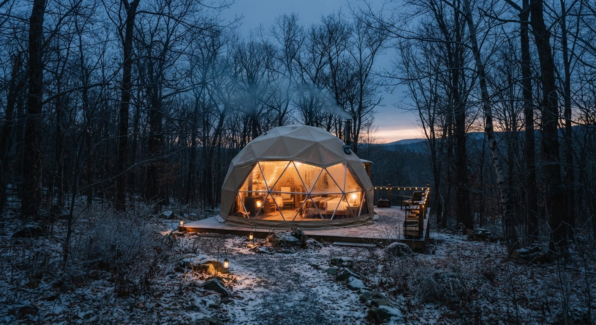
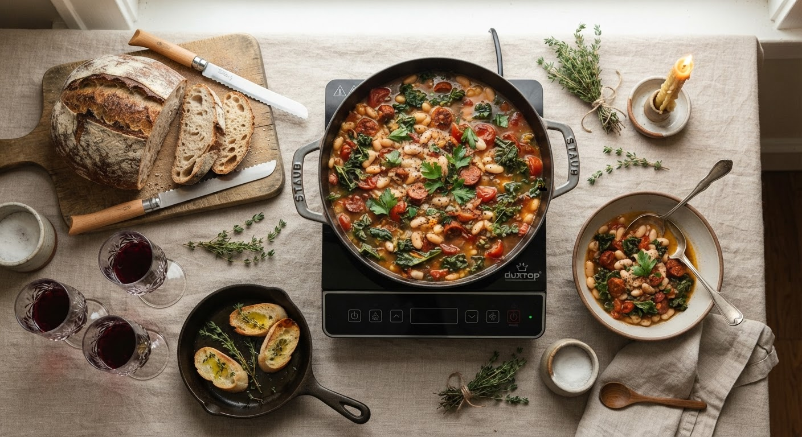
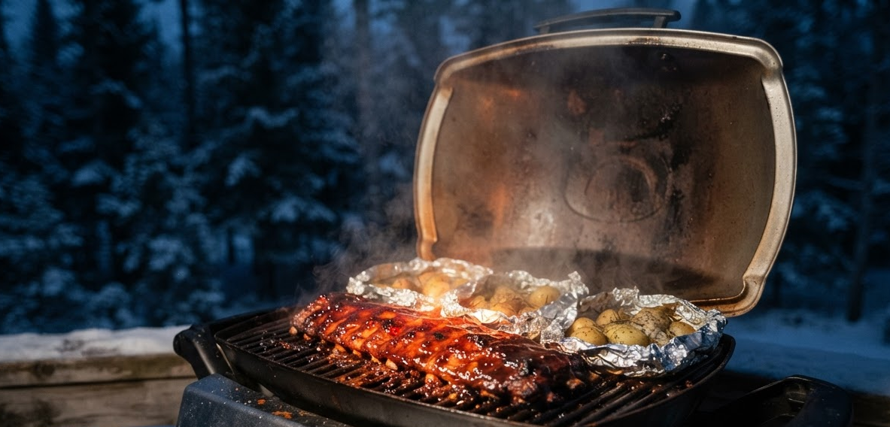
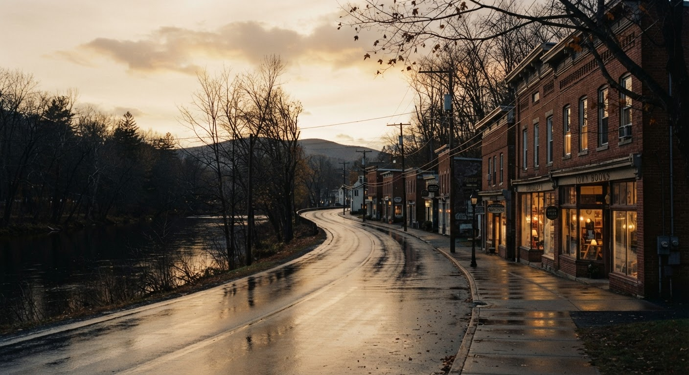

Wednesday Nov 4 to Saturday Nov 7. Thursday rains all day, so the hike moves to Friday morning, Woodstock fills Friday afternoon, and the anniversary dinner is in Narrowsburg that evening.
The first version planned dinners in a vacuum. Once the hike and the museum are on the calendar, the whole food plan shifts: you need a breakfast that can get you out the door at 9, a lunch that can travel into a forest, and a dinner that's waiting for you when you get back.
Two things you flagged are now fixed. Breakfast was almost an afterthought — it's now planned as four real mornings, because on hike day it's the difference between a good hike and a hungry one. And lunch is now a trail lunch, not leftovers eaten at home that you won't be at.
The big food change is Thursday: pork ribs instead of steak. That's better for this dome anyway, because ribs want a low, slow, two-hour cook — on the grill if it's dry, in the lidded pot if it isn't.
Four forecast sources agree: Thursday is steady rain, roughly a third of an inch, mostly in the morning. Friday is light showers and Saturday clears but turns cold.
So the week re-sequences. Thursday becomes the indoor day — a long slow morning, the ribs braised in the lidded pot on the stove, a fire and a bottle. Friday morning becomes the hike, Friday afternoon the museum, Friday evening the anniversary dinner. See the full forecast →
Bethel Woods is about 12 minutes from the dome — Swan Lake to Bethel is a straight shot west. That's what makes a Friday hike, then museum, then a 5 PM dinner in Narrowsburg actually work.
The Biscuit Brook trailhead is about 30 minutes up Route 47 to Claryville. Giant Ledge is about 55 minutes, on the same road but further along, past Frost Valley.
Sunny and 72, the best weather of the trip. Shop, check in, one-pot dinner by 7.
93% rain. Slow breakfast, ribs braising in the pot, fire in the evening. No driving.
Light showers. Trail at 9, Bethel Woods 1:30–3:30, Narrowsburg for 5.
Your actual anniversary. Cold and clearing. Breakfast, cake, coffee, out by 11.
Pulled Nov 3 from Apple Weather, the Weather Channel, Weather Underground, and a web search. They agree on the shape of the week, which is what makes this actionable.
| Day | Conditions | High / Low | Rain | Verdict |
|---|---|---|---|---|
| Wed 4 | Sunny to partly sunny | 72–73° / 52–55° | 2–9% | Best day of the trip |
| Thu 5 | Rain all day | 63–66° / 53–58° | 88–93% ~0.36 in | Stay in. Hike moves to Friday. |
| Fri 6 | Showers, mostly cloudy | 65–67° / 46–51° | 30–47% ~0.23 in | Hikeable, damp |
| Sat 7 | Partly cloudy | 54–56° / 39–45° | 14–24% | Clearing, and cold |
Highs for Thursday range from 63° to 66° depending on the source, and Friday's rain chance ranges from 30% to 47%. The Weather Channel and Weather Underground both put Thursday around 90% with a third of an inch of rain, which is the number that matters. Friday's spread is the wide one — worth re-checking Thursday night before committing to the trail.
What none of them say: freezing. Thursday sits in the low 60s. This is a wet day, not a cold one. That's why the response is re-sequencing rather than cancelling.
Friday is light showers, not a downpour, and a forest valley walk in rain with proper layers is genuinely pleasant. Biscuit Brook's tree cover helps.
Grilling in rain is miserable. The braise is the same dinner — sear, cider, cover, two hours on low induction. See the Meals page.
72 and sunny is rare for early November here. If there's anything you want to do outdoors that isn't the hike, do it Wednesday afternoon.
Lows in the upper 30s. Pack real layers for the drive out, and expect the dome to be chilly when you leave at 11.
Daylight saving ended Sunday, so it's dark by five. That's why the hike starts at 9 rather than 10, why the ribs go on mid-afternoon rather than at dinner time, and why the Narrowsburg drive home on Friday is in full dark.
Pulled from the property's own page for The Overlook. It has a galley kitchen with an induction cooktop, a fridge and an espresso machine, and a propane grill on the deck. There is no oven.
Fast and precise. Great for searing and simmering, poor for anything that needs a box of hot air.
Hard-lined to gas, with utensils and a prep station. This is your oven, and it's what the ribs need.
Wood-burning with unlimited firewood and kindling supplied. Fire up for s'mores after the ribs.
No roasting, no baking, no broiler. Everything here is built around that, not around workarounds.

"Induction cooktop" and "full array of cookware" are reassuring phrases that hide two real risks. Both have cheap fixes.
Rentals are often stocked with aluminum, which physically won't heat. Pack one cast iron or clad stainless skillet. You're driving, so trunk space is free.
Many galley kitchens use a single portable hob. None of the recipes here need two pans going at once.
Reheating stew on induction scorches fast. Go gentle, add a splash of broth, stir.
Sunset is about 4:45. The ribs go on in daylight, which means starting the cook mid-afternoon, not at dinner time.
You have a free morning Wednesday, which is the gift here. Shop in daylight, arrive relaxed, and don't drive back out for anything.
New York licenses liquor separately. ShopRite will sell you beer and cider, but wine means a liquor store or buying it in New Jersey before you leave. Plan for it instead of finding out in the aisle.
ShopRite of Liberty is the reliable full grocery, about 8 minutes from the dome and on Route 17 before the Swan Lake turnoff. Real meat counter, which matters because you want a rack of pork ribs — ask the counter, don't rely on the cooler being stocked.
Ignore the small market in Swan Lake. It's a seasonal summer-colony store and won't be there in November.
Two cooked dinners, three breakfasts, and one trail lunch. Breakfast is split down the middle — you eat eggs, Joyce doesn't.
| Section | What |
|---|---|
| Meat | 1 rack pork ribs (2–3 lb, ask the counter) · 1 lb Italian sausage |
| Produce | Baby potatoes · broccolini or green beans · garlic · onion · lemon · thyme · parsley · apples |
| Cans & jars | 2 cans white beans · diced tomatoes · broth · BBQ sauce · honey · olive oil |
| Bread | Sourdough loaf · baguette · English muffins or rolls for breakfast |
| Breakfast — you | 12 eggs · butter · bacon or breakfast sausage · milk |
| Breakfast — Joyce no eggs | Greek yogurt · granola · berries (fresh or frozen) · honey · oats · peanut butter · bananas · avocado · cream cheese · smoked salmon · extra bagels |
| Trail lunch | Cheese · salami · trail mix · apples · chocolate · sandwich rolls |
| Logistics | Heavy-duty foil · zip bags · water bottles · graham crackers, marshmallows, skewers |
| Drinks | Red wine · sparkling · seltzer · beer or cider |
Breakfasts are now four real meals instead of a wave in the direction of eggs. The two dinners are built for one heavy pan at a time and no oven.
Greek yogurt, granola, berries, honey. Two minutes, zero cooking. The most reliable option in a dome with one burner.
Five minutes, one pot. Best choice on hike day — it sticks with you far longer than eggs do.
Good bread from the Wednesday shop, lemon, chile flakes, salt. Five minutes. Feels deliberate rather than like a fallback.
Three minutes, nothing but a toaster or the skillet. The obvious Saturday anniversary breakfast.

Same dinner, same flavour, done on the induction hob with a lid on. The braise is honestly the easier version — you can't burn it, and it fills the dome with the smell of a slow Sunday.
| Day | Breakfast | Lunch | Dinner |
|---|---|---|---|
| Wed 4 | Travel | On the road | Bean & sausage stew · dome |
| Thu 5 | Slow — eggs or yogurt parfait | Stew leftovers · dome, raining | Braised pork ribs · dome, in the pot |
| Fri 6 | Quick — oats or eggs | Trail lunch · on Biscuit Brook | The Heron · Narrowsburg |
| Sat 7 | Bagels & cake | Drive home | Home |
The hike moved to Friday morning because Thursday is a washout. Bethel Woods is twelve minutes from the dome, so the trail, the museum and the drive west to dinner all fit in one day.
You have a trail to get to. Oats with peanut butter and banana, or eggs if you'd rather. Pack the sandwiches you made Thursday night.
About 30 minutes up Route 47 to Claryville. Light showers — bring layers and a shell, not a heavy coat.
Blue-blazed trail along the brook, about 2 miles to the lean-to. Turn around whenever you want. Treetop cover makes showers genuinely pleasant for most of it.
Eat at the turnaround, not on the drive home. Then head back.
Dry socks matter. You're 12 minutes from the museum, so there's time.
200 Hurd Road, Bethel. The 1960s museum on the actual 1969 Woodstock site. About 90 minutes is right on a hiking day.
An hour of downtime before the evening — which you'll want after a morning outside.
About 35–40 minutes on routes 52 and 97, west into the sunset.
Happy hour runs 5–6. Be seated at 5 so you catch it and you're not rushed by the 8 PM close.
Back at the dome by about 8. Firepit, or just sit.
No driving, no trail. Sleep in, make a proper breakfast, get the ribs into the pot around 2, and let them go 90 minutes while the dome fills up. Read, play cards, light the fire. If the sky unexpectedly clears, switch to the grill — the recipe page has both versions.

You'll drive the last stretch in dusk and arrive in the dark. That's fine from Bethel, but slow down on 97 — November is peak deer season upstate, and the drive back is fully dark. Decide who's driving before you order, not after.
Book early. The NJEA convention usually lands around this weekend, which puts a lot of New Jersey families in the Catskills. Small dining rooms fill up. Call The Heron first, and hold a second reservation elsewhere — then cancel the one you don't use.
Eldred Preserve, about 25 minutes. Lodging dining room with a fireplace, open Thursday to Monday until 9 PM. Steaks and chops, but also pastas and chicken in the $28–38 range so you can stay in budget.
Monticello, about 22 minutes. White-tablecloth Italian, house-made pasta, lamb bolognese. Open Friday until 10 PM, which is later than almost anything else around here.
Livingston Manor, about 18 minutes. Wood-fired pizza, fire pit, right off Route 17. Good value and a relaxed backup — but mostly outdoor seating, so it's a fair-weather pick only.
A $49 entrée for two, plus a second main, a starter, two drinks, 8% tax and a 20% tip lands around $165–195. That's over your range. Order two mains near $30, share one starter, arrive for happy hour, and have one person limited to a single drink. That gets you in under $150 all in.
Corrected from the first draft, which forgot wine, tax, tip, trail food, and three of the four breakfasts.
You're eating out once in four days. The other three dinners, four breakfasts, and two lunches come out of one grocery run. That's the whole reason the dome pays for itself, and it's why Thursday's ribs matter — a two-hour cook, whether braised or grilled, is something a restaurant would charge you $30 a plate for.
Tick these off. It saves to your browser, so you can close the page and come back.
On the back: Giant Ledge climbs about 1,050 feet in 1.7 miles and the trail is steep in spots. Biscuit Brook is the gentler call — a valley walk along a brook, about two miles to a lean-to, with modest climbing. Take the poles, and treat turning around as a successful hike, not a failure.
On the firewood: "unlimited firewood" usually means a communal pile that's a walk away. The uninjured partner hauls it, in daylight. Same for luggage on Saturday.
On Saturday morning: you check out on your anniversary. Coffee, the cake you bought Wednesday, and an hour that's actually about the two of you before the packing starts.